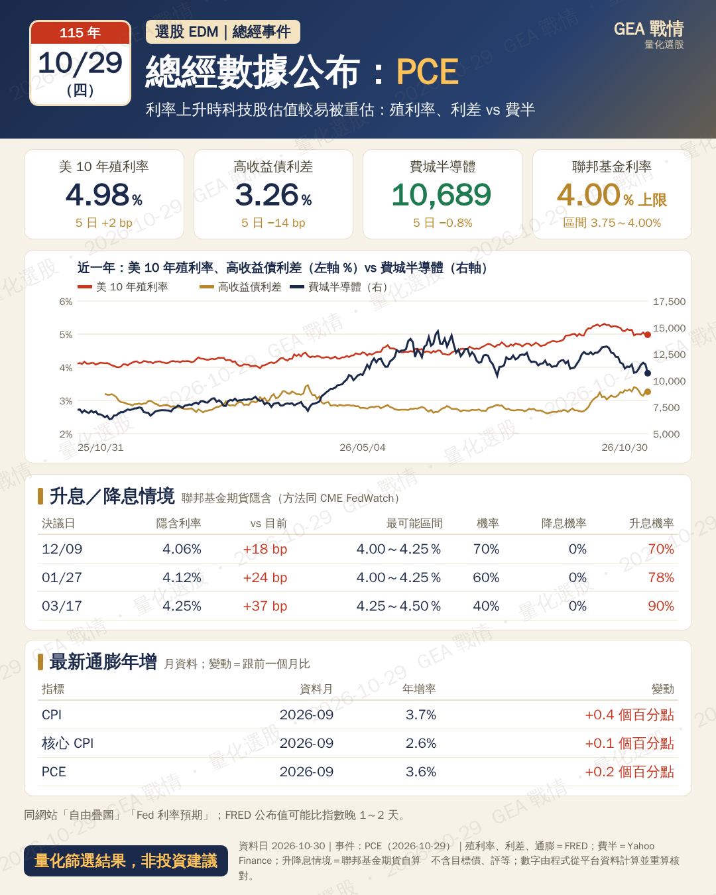
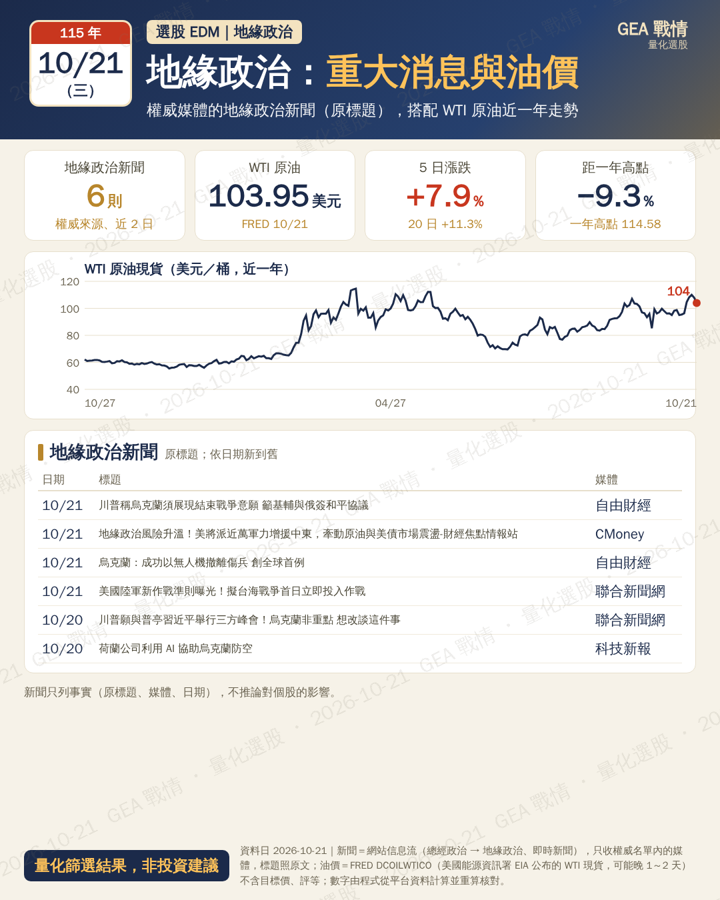
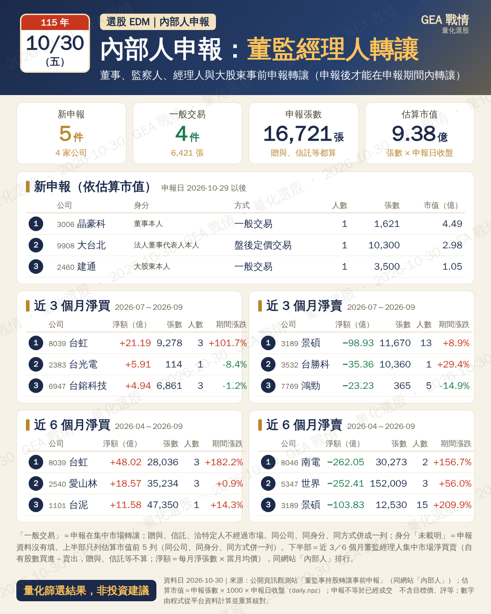
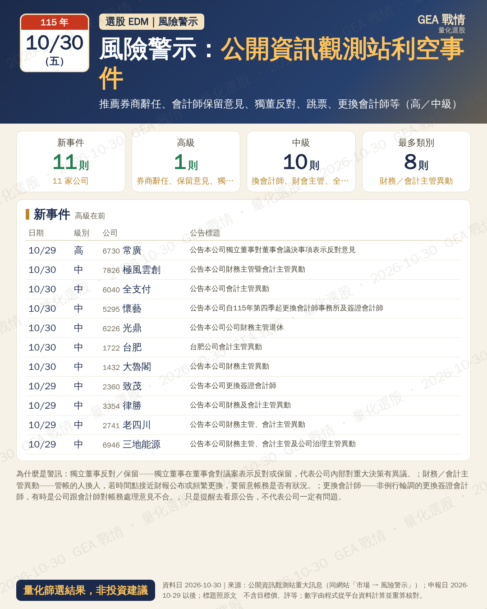

總經事件（示範：條件成立，資料日 2026-10-30 出卡）下載 PNG

核對通過 殖利率 11 個月、費半 12 個月、利差 10 個月；FedWatch 4 次會議
・正式版同一段 build()，這天有事件
ev_macro（示範：條件不成立，資料日 2026-10-27 不出）下載 PNG
核對通過 不出卡
・正式版同一段 build()，這天沒有事件 → 網站上不出這張
地緣政治（示範：條件成立，資料日 2026-10-21 出卡）下載 PNG

核對通過 新聞 6 則（媒體逐一比對權威名單）；WTI 247 天；觸發：WTI 單日 −3.7%、WTI 5 日 +7.9%
・正式版同一段 build()，這天有事件
ev_geo（示範：條件不成立，資料日 2026-10-30 不出）下載 PNG
核對通過 不出卡
・正式版同一段 build()，這天沒有事件 → 網站上不出這張
・原因：地緣新聞 9 則，但沒有重大標記、WTI 單日 −1.8%（門檻 ±3%）、5 日 −4.2%（門檻 ±5%）
內部人申報（示範：條件成立，資料日 2026-10-30 出卡）下載 PNG

核對通過 5 件逐件對原始檔 data/insider.json；收盤用 daily.npz；上半部 4 列、另有 0 件；排行 20 列淨張數對分片 mk、淨額用 daily.npz 月均價重算
・正式版同一段 build()，這天有事件
風險警示（示範：條件成立，資料日 2026-10-30 出卡）下載 PNG

核對通過 11 則逐筆回原始檔 data/mops_all.json 比對標題並重新分類
・正式版同一段 build()，這天有事件
ev_fcf（示範：條件不成立，資料日 2026-10-30 不出）下載 PNG
核對通過 不出卡
・正式版同一段 build()，這天沒有事件 → 網站上不出這張